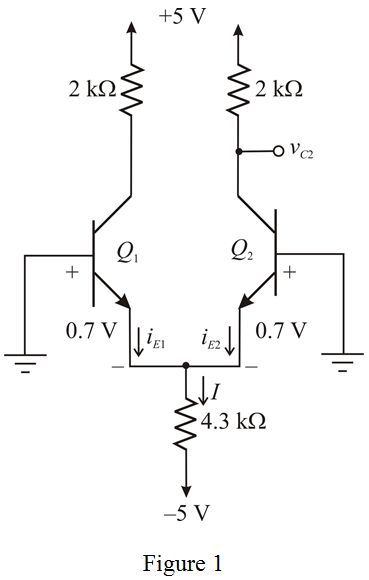
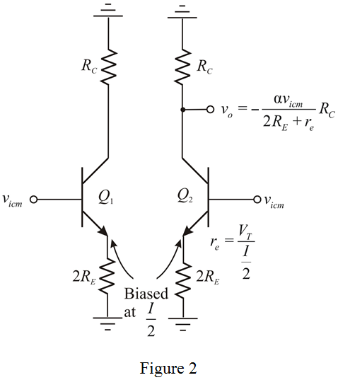

Calculate the value of small signal emitter resistance.

Substitute  for
for  and
and  for
for  .
.
Calculate the value of small signal differential voltage gain,  .
.
Substitute  for
for  ,
,  for
for  and
and  for
for  .
.
Therefore, the differential gain is  .
.
Refer to Figure P8.62 in the textbook.
(a)
Draw the circuit diagram with notations.

Apply Kirchhoff’s voltage law to left side loop.
Calculate the value of emitter current.
Calculate the value of small signal emitter resistance.
Substitute for and for .
Calculate the value of small signal differential voltage gain, .
Substitute for , for and for .
Therefore, the differential gain is .
(b)
Draw the circuit diagram with common mode input.

Substitute  for
for  ,
,  for
for  and
and  for
for  .
.

Therefore, the common-mode gain is .
(c)
Calculate the value of common-mode rejection ratio.
Substitute for and for  .
.
Therefore, the common-mode rejection ration is .
(d)
Calculate the output voltage.

Substitute for  and for
and for  .
.

Therefore, the output voltage is .